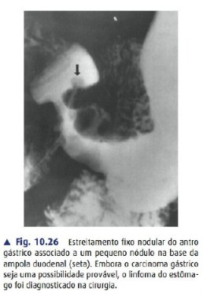

Lauren
Intestinal
bem difer. · idoso/H.pylori · hematogênica ·
melhorDifuso
anel sinete · jovem/mulher ·
CDH1 · linite ·
pior
Borrmann
- I polipoide
- II ulcerado, bordas nítidas
- III ulcerado infiltrativo (+ comum)
- IV difuso = linite plástica

Fig. 10.26 — Estreitamento nodular fixo do antro gástrico. Apesar de sugerir ca. gástrico, o diagnóstico cirúrgico foi linfoma.
◆ early gastric cancer
Restrito a mucosa/submucosa (T1), independe de linfonodo.
D1 — perigástricas
123456
Para T1/early ou alto risco cirúrgico.
D2 — + vasculares
78a9101112a
Padrão p/ ≥T2. 7=gástrica esq · 8=hepática comum · 9=celíaco · 10=hilo esplênico · 11=esplênica · 12=lig. hepatoduodenal.
◆ regra de ouro
D2 preservando baço e pâncreas (só ressecar se invasão). Mínimo 15–16 linfonodos.
🟢 tradução simplesA gastrectomia oncológica é uma dissecção linfonodal que por acaso retira o estômago. Cada vaso é ligado na origem porque os linfonodos moram ao redor da raiz do vaso. Ligou perto do estômago = gastrectomia. Ligou na origem = cirurgia de câncer.
1
estadiamentoAcesso + inventário + lavado peritoneal ANTES de manipular
por quêCitologia + = M1 mesmo sem nódulo visível → muda de curativa para paliativa. Colher antes evita diluição e a dúvida de ter sido você quem semeou.
2
exposiçãoOmentectomia — plano avascular com o cólon transverso → abre a retrocavidade
por quêO omento divide a drenagem linfática da grande curvatura. Fora do plano → sangra do mesocólon e arrisca a cólica média. (Bursectomia não é mais rotina.)
3
vascular direitaGastroepiploica dir. na origem (da gastroduodenal) 6
por quêA estação 6 fica na raiz do vaso. Rente ao estômago = deixa linfonodo in situ = recidiva. ⚠️ Tronco de Henle ao lado — avulsão clássica.
4
hilo hepáticoGástrica dir. junto à hepática própria 5 + hepatoduodenal 12a
por quêDefine D1 × D2 à direita. ⚠️ Hepática esquerda substituta no pars flaccida — ligar por engano = isquemia hepática esquerda.
5
secção distalSecção duodenal 1–2 cm do piloro
por quêMargem distal quase nunca é o problema — o problema é o coto duodenal, fechado às cegas, sede de fístula de alto débito enzimático. 💀
6
coração da D2Esqueletizar hepática comum 8a + tronco celíaco 9
por quêSão as estações que definem a D2 — e ficam na borda superior do pâncreas. Energia demais ali = fístula pancreática pós-D2, a complicação típica. 🔥
7
passo oncológico-chaveGástrica esquerda NA ORIGEM 7 · veia coronária à frente
por quêÉ O passo. A estação 7 é a de maior chance de acometimento. Ligar perto do estômago é mais fácil, mais rápido e oncologicamente inadequado. 🎯
8
vascular esquerdaGastroepiploica esq. + gástricas curtas · esplênica 11 · hilo 10 (se total)
por quê10 e 11 são vizinhas de baço e cauda do pâncreas. Esplenopancreatectomia de rotina foi abandonada — mais morbidade, sem ganho de sobrevida. Só ressecar se invasão direta. 🚫
9
secção proximalMargem ≥5 cm intestinal · ≥8 cm difuso · congelação sempre
por quêO difuso (anel de sinete, CDH1) infiltra a submucosa muito além do que aparenta — mesma biologia da linite. Olho e dedo subestimam. 📏
10
reconstruçãoSubtotal: BII ou Y de Roux · Total: esofagojejuno em Y EEA, alça 50–60 cm
por quêSem estômago não há barreira ao refluxo → esofagite alcalina incapacitante. Na total o Y de Roux é obrigatório, não preferível.
11
verificaçãoTeste de estanqueidade · dreno seletivo · contar linfonodos (≥15–16)
por quêA esofagojejunostomia é a anastomose de maior risco da cirurgia digestiva alta — esôfago não tem serosa. E <15 linfonodos pode ser subestadiamento, não ausência de doença.
◆ 3 checagens antes de reconstruir① Gástrica esquerda ligada na origem? ② Margem proximal negativa na congelação? ③ Baço e pâncreas preservados?
metástasesV-M-K-B-I · Virchow · Maria José · Krukenberg · Blumer · Irish
margens5 e 8 → 5cm intestinal · 8cm difuso
D2coração = 7-8-9 (gástrica esq · hepática comum · celíaco)
borrmannIII = mais comum · IV = linite ("garrafa de couro")
perioperatórioFLOT ≥cT2/N+ (superou o MAGIC)
a frase que organiza🎯 Dissecção linfonodal que por acaso tira o estômago — ligue na origem
lavado💧 Colher antes de manipular · citologia + = M1
baço e pâncreas🚫 Só se invasão direta — esplenopancreatectomia de rotina foi abandonada
esofagojejuno⚠️ Anastomose de maior risco — esôfago não tem serosa
fístula pancreática🔥 Complicação típica da D2 (8a/9 na borda do pâncreas)